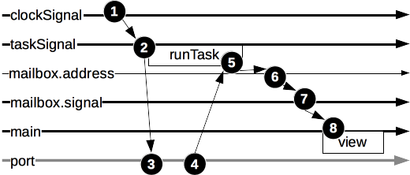

Tasks
In Elm, tasks allow us to make asynchronous operations. A task might succeed or fail. They are similar to promises in JavaScript.
Let's start with an application that displays a message every second:
module Main (..) where
import Html
import Time
clockSignal : Signal Time.Time
clockSignal =
Time.every Time.second
messageSignal : Signal String
messageSignal =
Signal.map toString clockSignal
view : String -> Html.Html
view message =
Html.text message
main : Signal.Signal Html.Html
main =
Signal.map view messageSignal
https://github.com/sporto/elm-tutorial-assets/blob/master/code/040_effects/Tasks01.elm
If you run this in your browser you will see a number that changes slightly every second. This number is the current time (as a unix timestamp).
Let's go through the example:
clockSignalgives a signal that changes every second, the output of this signal is the current timestamp.messageSignaljust convertsclockSignalto a string.viewtakes a string and return htmlmainmaps themessageSignalthroughviewin order to produce a signal of html, which is what we see.
Adding a task
Now, instead of displaying the current timestamp every second, we want to display a message coming through ajax. To do this we will need a fake server, so we can send a request to it and get a message back.
Adding a fake server
We will use node for our fake server, because if you are reading this is quite likely that you already have node installed and are familiar with it.
In another terminal go to the same folder with your Elm code and start a node project with all the defaults:
npm init
Then install json-server:
npm install json-server -S
Create an index.js file in that directory with:
var jsonServer = require('json-server')
// Returns an Express server
var server = jsonServer.create()
// Allow CORS
server.use(function(req, res, next) {
res.header("Access-Control-Allow-Origin", "*");
res.header("Access-Control-Allow-Headers", "Origin, X-Requested-With, Content-Type, Accept");
next();
});
server.get('/', function (req, res) {
res.send(Math.random().toString())
})
console.log('Listening at 3000')
server.listen(3000)
Run json-server:
node index.js
Open http://localhost:3000/ in your browser, you should a random number, if you refresh you will get a different one. We will use call this from Elm. Keep this server running.
Using tasks for http
First let's install the Http module, stop Elm reactor, then:
elm package install evancz/elm-http
elm reactor
Then create an Elm application like:
module Main (..) where
import Html
import Time
import Http
import Task
view : String -> Html.Html
view message =
Html.text message
clockSignal : Signal Time.Time
clockSignal =
Time.every (2 * Time.second)
mb : Signal.Mailbox String
mb =
Signal.mailbox ""
httpTask : Task.Task Http.Error String
httpTask =
Http.getString "http://localhost:3000/"
sendToMb : String -> Task.Task x ()
sendToMb result =
Signal.send mb.address result
runTask : Task.Task Http.Error ()
runTask =
Task.andThen httpTask sendToMb
taskSignal : Signal (Task.Task Http.Error ())
taskSignal =
Signal.map (always runTask) clockSignal
main : Signal.Signal Html.Html
main =
Signal.map view mb.signal
port runner : Signal (Task.Task Http.Error ())
port runner =
taskSignal
https://github.com/sporto/elm-tutorial-assets/blob/master/code/040_effects/Tasks02.elm
If you open this application using Elm Reactor you will see a random number changing every two seconds. This random number is coming from the node server we created above.
Let's dissect this code:
view
The view display the given message.
clockSignal
Just as before we will use this clockSignal for refreshing the view. Every 2 seconds in this case.
mb
mb : Signal.Mailbox String
mb =
Signal.mailbox ""
We need a mailbox to send the results of the tasks.
httpTask
httpTask : Task.Task Http.Error String
httpTask =
Http.getString "http://localhost:3000/"
This function returns a task. This particular task is Task.Task Http.Error String. The first type after Task.Task is the failure value, the second type if the success value. So this means that if this tasks fails it will give us an Http.Error record. If it succeeds it will give us a String.
Http.getString "http://localhost:3000/" creates the task. But this code doesn't actually do anything by itself, in order to actually run the task we need to send it to a port.
More details on the Http module here.
sendToMb
sendToMb : String -> Task.Task x ()
sendToMb result =
Signal.send mb.address result
This function takes a string and sends it to the mailbox (via address). It uses Signal.send for this. It returns a new task. This new task has a Task.Task x () signature, where x is the possible error value and () is an empty success value.
runTask
runTask : Task.Task Http.Error ()
runTask =
Task.andThen httpTask sendToMb
This function creates a chain between httpTask and our mailbox.
It is saying: "When this task is done send the results to sendToMb". This function doesn't do anything by itself either, it just wires things up and returns a new task.
There is quite a bit happening in these lines:
Task.andThentakes an input task and a callback. When the input task is done it calls the callback with the success result of the input task.andThenwill only call the callback if successful, in case of errorandThenwon't proceedsendToMbreceives the success value from the input taskandThenreturns a new task. This new task hasHttp.Erroras the possible error result because the original input task (httpTask) has that error type.
taskSignal
taskSignal : Signal (Task.Task Http.Error ())
taskSignal =
Signal.map (always runTask) clockSignal
Here we take the clockSignal, which gives us a heartbeat every two seconds and we map it through runTask.
- We don't really care about the value given by
clockSignalthis is why we use(always runTask). (always runTask)returns runrunTaskregardless of the input. This is similar to an anonymous function like(\_ -> runTask).- This function return a signal of the tasks. As
runTaskhas the signature ofTask.Task Http.Error (), then the signal has the signature ofSignal (Task.Task Http.Error ()).
main
main : Signal.Signal Html.Html
main =
Signal.map view mb.signal
In main we pick the output signal from the mailbox and we pipe it through the view. As the mailbox address gets the results from the tasks the mailbox signal will output this results for the view to consume.
port
port runner : Signal (Task.Task Http.Error ())
port runner =
taskSignal
Finally, this is where the magic happens. Without this part the application will do nothing. port tell Elm to take the taskSignal and actually run the tasks coming from it.
runneris the name of the port, it could be anything you want.
Here is a diagram that should help clarify what is happening:

- We have a clock signal for a heartbeat every 2 seconds
- In
taskSignalwe map this clock signal creating a task - We send the
taskSignalto a port so it runs - Result from the port is send back to
runTask runTaskexecutes the next step afterandThen- We send the result of the task to the mailbox
- The mailbox broadcasts an output signal
mainpicks up the signal from the mailbox and renders a view, this vies shows the result of the tasks
Conclusion
Task are how you achieve side effects in Elm, they are a key building block for web application.
You can read more about tasks in the official site.